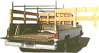
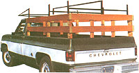
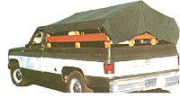
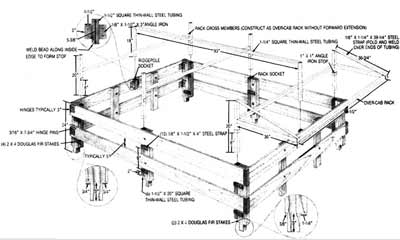

You can expand your truck's versatility with this inexpensive, homemade, haul-all conversion.
Most of us would agree that one of the homesteader's first requirements is a truck, and because of its low cost and ready availability, the truck of choice seems to be either the half-ton or three-quarter-ton pickup, preferably of the 4' X 8' box size. There are a great many jobs that this basic vehicle can perform in an admirable manner, such as hauling hay, grain, fertilizer, firewood, cement, soil, the shorter lengths of lumber, 4' X 8' sheets of plywood, and so on. In fact, I'll venture to say that after owning a pickup for any length of time, most of us have asked ourselves, "How did I ever live without one?"
Even so, there are times when the standard pickup box won't do all the jobs that are required when you're converting raw land into a livable homestead. It shows its weaknesses, for instance, when you need to haul 20' lengths of rebar and PVC pipe, the longer lengths of lumber and corrugated sheet iron, livestock, or large loads of firewood, brush, or trash ... or, perhaps, when you wish for a short-stay camper for hunting and fishing.
There are, of course, various commercial and homebuilt answers for all such hauling jobs. For bulk loading or moving livestock, for example, you need a stake bed, while a lumber rack will handle the longer pieces of pipe, rebar, board, and the like. The short-stay camper also can be either commercial or homebuilt (though it's usually expensive either way). But if you provide for your needs by using three separate pieces of equipment, each of the units will require storage when not in use, not to mention equipment or extra hands for mounting and dismounting. (If you've ever had to go out and round up neighbors for chores of this nature, you know what a pain it can be: Jane had to go into town for a tractor part ...Bill's gone fishing ...Bob's on the other side of the hill, cutting timber.)
After giving much thought to the extra jobs I wished my truck could handle, I decided I needed an arrangement that could manage bulk and long-length hauling, as well as serving as a camper. What's more, I felt it was necessary that one person of normal strength and stature be able to erect and disassemble each unit.
THE STAKE BED
I began with the stake bed. Since I expected to leave this unit mounted on the truck most of the time, I wanted it to look good. Therefore, I bought the best straight-grained Douglas fir 2 X 4's that I could find for the stakes, and 1 X 6 vertical-grained Douglas fir for the side boards. Granted, this is fairly expensive lumber, and you can do nearly as well at less cost by buying standard boards. But whichever grade you choose, I'd advise you to go to a lumberyard that will let you select from kiln-dried stock. Then check each piece for grain, knots, sap pockets ...and especially for straightness. (To be sure about the last, bring the board end to eye level and sight down its length on the shouldering side.) Reject anything that doesn't please you.
Both for aesthetic reasons and to provide corrosion resistance, I'd planned to use brass carriage bolts and countersunk wood screws to join the side and end boards to the stakes. But the only place such hardware could be found was at a marine supply house-in a distant town and at a prohibitive cost. I ended up substituting zinc-coated hardware, first primed and then painted in a subdued yellow color to simulate brass.
For looks and for easy insertion and removal, I elected to cut the stake ends in a rectangular pattern to tailor-fit the existing stake-bed holes, rather than simply to taper the boards and jam them in.
As you can see in the diagram, the forward stake on either side has its cuts offset to the rear by 3/8" to accommodate the 8' sideboard length. These cuts are easily made with either a table saw or a handsaw. The side and end boards and stakes can then be sanded and given three coats of polyurethane varnish (allow six to eight hours between coats, and sand lightly after each of the first two has dried) to bring out the wood's natural color and grain.
To insure the accurate joining of the stakes and side boards, I inserted the stakes in the bed holes and C-clamped the side boards to the stakes (with a suitable cushion between the boards and clamps to prevent marring). Then I squared, drilled, and joined the boards with 3/8" X 2-1/2" carriage bolts and flat and lock washers with nuts, and countersank the wood screws to prevent board warp. I also decided to mount the side and end boards on the outside of the stakes, simply because they looked better that way.
The forward and rear sections were fabricated in the same manner. The front stakes were cut to a length that just cleared the top lip of the truck bed; the rear stakes, to a length that extended 3" below the top of the raised tailgate. All four sections were then joined with 3" brass-plated butt hinges at the upper and lower inside-forward and rear corners. The exception was the right-rear corner, where one leg of each of the hinges was attached to the outside of the side boards and the other leg to the inside of the rear-gate boards, so that the rear gate swung open on its right-side hinges (a very desirable feature for bulk loading). In place of the standard hinge pins, easily removable pins were made of 3/16" chrome-plated rod, though brass rods would have been even better. After the forward, side, and end sections were joined, 1-1/2" X 5-1/2" angle iron pieces (also previously primed and painted) were applied-purely for aesthetic reasons-to each end of' the forward and end boards.
THE LUMBER RACK
With the basic stake bed completed, I was ready to tackle the lumber rack. Since assembly and disassembly were to be one-person operations, the rack would be made in three separate and independent sections, with the sockets for the rack legs permanently attached to the stake bed.
I made the sockets of 1-1/2" thin-wall (.065") square steel tubing (thin-wall because the major load would be in compression) and attached them to the 2 X 4 stakes with 1/8" X 1-1/2" X 4" steel strap welded to the square tube by using 7014 3/32" electric rod at 80 amps. After drilling holes in the attaching straps, I ground, sandblasted, painted, and attached the welds to the side stakes with 3/8" X 3" carriage bolts and flat and lock washers with nuts.
After that was done, three identical rack cross members were fabricated, using 1-1/4" heavy-wall (.120") square steel tubing. The legs were welded to the cross tubes (which were also of 1-1/4" heavy-wall tubing) by using 7014 1/8" rod at 110 amps. Stops made from 1/8" X 1" angle iron were then welded to each cross-member leg. One of the three identical cross members was made to serve as the independent, over-the-cab front section by welding to it an additional rectangular section of 1-1/4" square steel tube (I recommend the thin-wall type, to make handling of the completed section easier), which, in turn, was supported by 1/8" X 1-1/4" steel straps welded to the forward horizontal members and the tops of the forward vertical legs. When those tasks were completed, all the welds were ground, sandblasted, and painted as in the previous operation.
THE CAMPER
The simple, inexpensive camper completed the project. And it did indeed turn out to be quite simple and inexpensive.
It was composed of a longitudinal ridgepole held in place by two sockets screwed to the top boards of the front and rear stake-bed sections at midpoint. The sockets consisted of 1-1/2" X 5-3/8" thin-wall square steel tubing welded on each side to 1/8" X 1-1/2" X 3" angle iron. The ridgepole was made of 1 1/4" thin-wall steel tubing, with legs of the same material welded at 90° to fit the fore and aft sockets. A weld bead was applied to the lower inside corners of the sockets to prevent the pole from slipping through.
The roof of my camper is a 10' X 12' waterproof canvas tarp secured to six cargo tie-down rings that I screwed to the inside rails of the truck bed. I use six short lengths of rope to tie down the tarp. For a neat appearance, and to preclude the bother of ropes, snap fasteners could be used. For a more weatherproof shelter, canvas sections with sewn-in plastic windows could be added.
Yet even as pleased as I am with my project, I'm sure the inventive brains of MOTHER-readers can come up with no end of modifications and improvements on this triplethreat, haul-all system!
|
 The Stake Bed |
 The Lumber Rack |
 The Camper |
|
 |
|
|